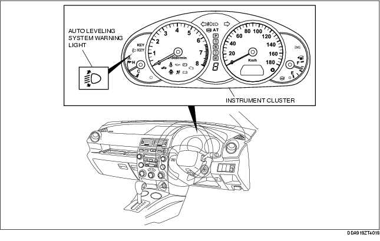

Auto leveling control module construction/operation
• Installed in the dashboard on the front passenger side.
• Adjusts the optical axis according to the input signal from the PCM, instrument cluster, and the auto leveling sensor.
• When a malfunction in the auto leveling system is detected, the auto leveling system warning light illuminates to advice the driver.
Optical Axis Adjusting Function
• Identifies the vehicle speed and attitude variations according to the signal input from the PCM, instrument cluster, and the auto level sensor, and calculates the optimum amount for optical axis adjustment.
• Controls the headlight leveling actuator according to the optical axis adjustment amount.
Initial Setting Function
• Records the vehicle height while there are no occupants based on the signal voltage input from the auto leveling sensor when the vehicle is unoccupied.
• Initial setting must be performed after performing any of the following procedures.
- - Front combination light replacement
- - Replacement of the auto leveling control module
- - Auto leveling sensor removal/installation
- - Suspension replacement or work that effects vehicle height
Fail-safe Function
• When a malfunction shown in the fail-safe function table is detected, the fail-safe function operates. At this time, the auto leveling system warning light illuminates to inform the driver.
• Each part is controlled as shown in the fail-safe function table.
Fail-safe function table
-
• When the ignition switch is turned to the ON position, the auto leveling control module performs the bulb check of the auto leveling system warning light and illuminates the warning light for approx. 3 s if there is no malfunction.
